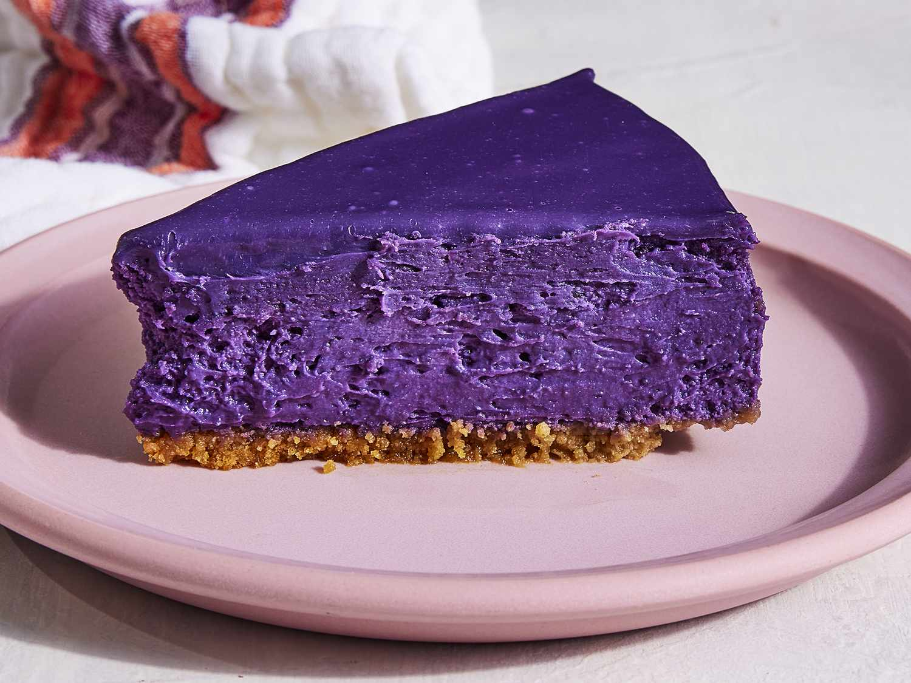

Ube Cheesecake

Description
This ube cheesecake is everything you ever
wanted in an ube dessert. Luxurious ube cheesecake
filling on a bed of crunchy coconut
cookie crust then topped with creamy coconut
whipped cream.
Ube cheesecake, also known as purple yam
cheesecake, is a Filipino cheesecake made
with a base of crushed graham crackers and
an upper layer of cream cheese and ube halaya.
It can be prepared baked or simply refrigerated.
Like other ube desserts in the Philippines, it
is characteristically purple in color.
Indredients
Crust:
- Cooking Spray
- 1 cup graham cracker crumbs
- 3 tablespoons granulated sugar
- ⅛ teaspoon kosher salt
Filling:
- 3 (8 ounce) packages cream cheese, softened
- ½ cup granulated sugar
- 1 ¼ cups ube jam (Ube Halaya)
- ½ cup heavy whipping cream
- 3 large eggs
- 2 teaspoons ube extract
- ½ teaspoon vanilla extract
- ¼ teaspoon kosher salt
Ube Ganache:
- ½ cup white chocolate chips
- ¼ cup heavy whipping cream
- ¼ teaspoon ube extract
Directions
- Preheat the oven to 325 degrees F (165 degrees C).
Lightly spray a 9-inch springform pan with cooking spray.
Wrap outside of the pan in a double layer of heavy-duty aluminum foil,
making sure to reach all the way up the sides of the pan.
- Prepare the Crust: Stir together graham cracker crumbs,
melted butter, granulated sugar, and salt in a bowl until thoroughly combined.
Press mixture onto the bottom of the prepared springform pan.
- Bake in the preheated oven until set and lightly golden, about 15 minutes.
Transfer to a wire rack and let cool for 20 minutes.
- Prepare the Filling: Beat cream cheese with a stand mixer
fitted with a paddle attachment on medium speed until creamy and smooth,
about 2 minutes. Add sugar and beat until combined, then add ube jam and cream,
beating just until no streaks remain, stopping to scrape down the sides and bottom
of the bowl as needed. Add eggs, 1 at a time, beating on low just until combined
after each addition. Add ube extract, vanilla extract, and salt and beat on low
until just combined. Pour filling into the cooled crust.
- Place springform pan in a large roasting pan.
Add hot water to roasting pan to reach halfway up sides of springform pan.
- Return to the preheated oven and bake until the center is almost
set but still slightly wobbly, 55 to 60 minutes. Turn off oven,
and let cheesecake stand in oven, with door ajar (about 3 inches), for 1 hour.
- Remove cheesecake from roasting pan, and place on a wire rack.
Remove foil from outside of the pan, and cool cheesecake to room temperature, about 1 hour.
Cover with plastic wrap and transfer to the refrigerator to chill completely, at least 8 or up to 24 hours.
- Prepare Ganache: Place chocolate chips in a medium heat-proof bowl.
Heat cream in a small saucepan over medium until steaming, then pour over the chocolate.
Let stand for 1 minute, then whisk until chocolate is melted and smooth.
Add ube extract and whisk to combine. Set aside to cool until thickened, about 15 minutes.
- Run a knife around outer edge of cheesecake to loosen from sides of pan.
Remove sides of pan. Transfer cheesecake to a serving plate or platter.
Pour ganache over the top of the cheesecake, letting it drip off the sides.
Transfer to the refrigerator and chill until set, about 20 minutes.